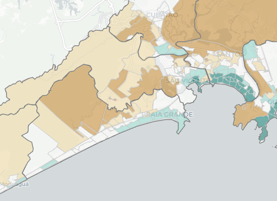
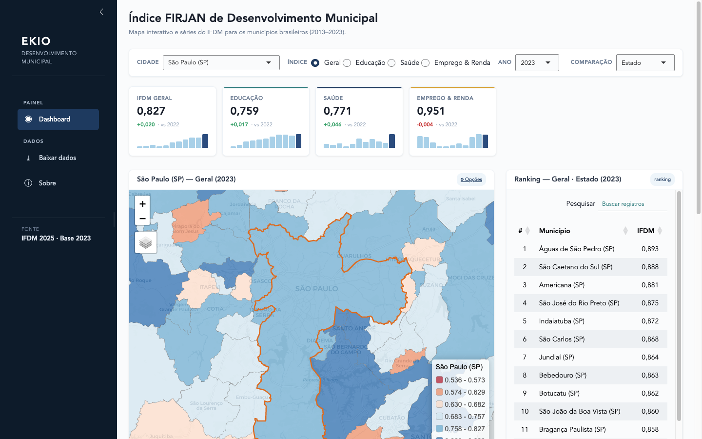
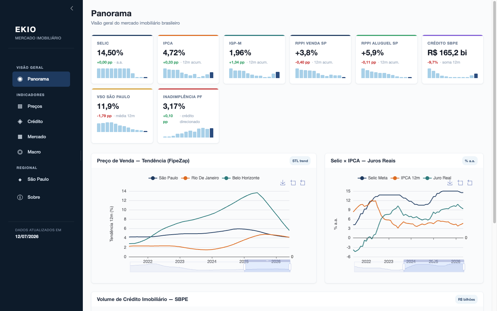
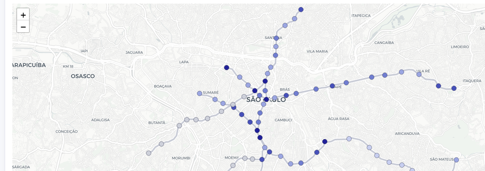

Shiny apps
Interactive dashboards and data exploration tools built with R Shiny.

Atlas Brasil
Interactive map of socioeconomic and demographic indicators across Brazil's metropolitan regions. Data from the Atlas of Human Development (PNUD, IPEA, FJP), covering Census 2000 and 2010 with income adjusted for inflation.

IDH dos municípios
Dashboard for exploring the Firjan Municipal Development Index (IFDM) across Brazilian municipalities (2013–2023). Search any city, benchmark it against state/regional/national averages, track Education, Health, and Employment & Income over time, and export the underlying data.

Painel do Mercado Imobiliário
Dashboard for monitoring the Brazilian real estate market. Tracks price indices (FipeZap, RPPI), interest rates (Selic, IPCA), credit flows (SBPE), and regional indicators for São Paulo, built on top of the realestatebr package.

Metrô SP
Dashboard for São Paulo Metro ridership. Explore demand by line and by station, an animated map of yearly boardings across the network, year-over-year and 2019-recovery comparisons, built on top of the metrosp package.
SPOD Dashboard
Interactive dashboard for the São Paulo Origin-Destination Survey (Pesquisa OD). Visualizes travel patterns, modal splits, and mobility flows across the metropolitan region, built on top of the odsp package.